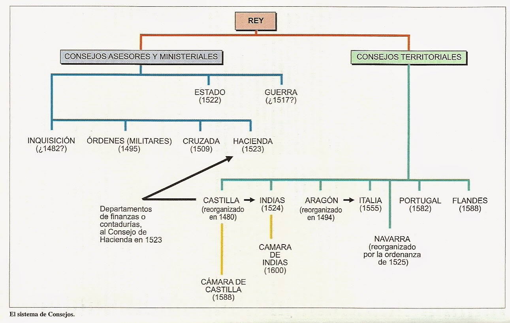

El sistema polisinodial (a base de concejos) se reforzó durante los Austrias mayores debido a que fortalecía el poder del monarca y era necesario ante la complejidad creciente del gobierno.
Se crearon nuevos consejos, además del Consejo Real, el de Aragón y el de la Inquisición. Estaban formados por burócratas y letrados. Se gobernaba en nombre del rey. Fueron:
Consejo de Estado y Consejo de Guerra (1521): El más importante. Coordinaba todos los consejos de la Monarquía. Compartía consejeros con el de Guerra.
Consejo de Hacienda (1523): Se ocupaba de la recaudación de impuestos, préstamos…
Consejo de Órdenes (1523): Se ocupaba de la administración de las órdenes militares (Santiago, Calatrava y Alcántara), cuyo gran maestre (el que dirigía la orden) era el monarca. Las órdenes militares eran muy ricas gracias a su actuación en la Reconquista.
Consejo de Indias (1524): Controlaba el comercio y la emigración a América. De él dependía la Casa de Contratación de Sevilla.
Consejo de la Cruzada (1525): Recaudaba dicho impuesto.
Consejo de Navarra (1525): Se encargaba de los asuntos navarros.
Consejo de Italia (1556): Se separó del de Aragón.
Consejo de Portugal (1582): Se crea a raíz de la anexión de Portugal a la Monarquía Hispánica. Estaba formado íntegramente por portugueses.
Consejo de Flandes (1588): Se crea por los problemas de la Guerra de los 80 años.

Menos cortes
Las cortes de todos los reinos de la Monarquía se reunieron con muy poca frecuencia por dos motivos principales: al rey no le interesaba un posible foro opositor y a las ciudades no les interesaba otra oportunidad del rey para pedirles dinero. Desde 1538 sólo las ciudades se reunían en Cortes.
Una capital
Los continuos viajes de Carlos V dificultaron la creación de una capital y el asentamiento de una corte. Además era habitual que los virreyes fueran familiares directos.
En 1561 Felipe II establece la corte en Madrid. Era una villa de unos 30.000 habitantes. En ella se construye un nuevo alcázar para el rey y se inician los trabajos para levantar en El Escorial, un palacio-monasterio.